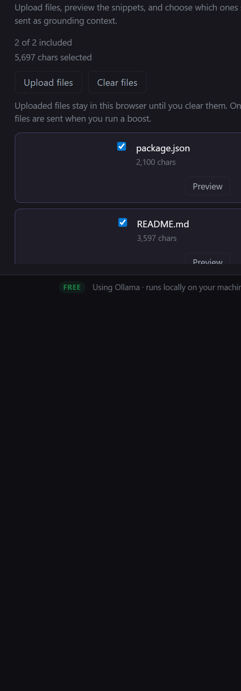

VS Code integrated browser using Chromium 142.0.7444.265 on Windows 10 x64.
Mozilla/5.0 (Windows NT 10.0; Win64; x64) AppleWebKit/537.36 (KHTML, like Gecko) Code/1.122.0 Chrome/142.0.7444.265 Electron/39.8.8 Safari/537.36
This report captures a real-browser validation pass of the PromptBoost web application running locally via Vite. The run focused on launch behavior, input handling, repo-context persistence, compare-mode behavior, explicit error handling, and delayed-response responsiveness.
Main prompt entry is plain text in a multiline textarea. Optional boost rules are also plain text.
Accepted extensions: .md, .txt, .ts, .tsx, .js, .jsx, .json, .css, .html, .yml, .yaml, .toml, .xml, .py, .java, .go, .rs, .c, .cpp, .h, .hpp, .cs, .rb, .php, .sql, .sh.
Compare mode completed successfully with two mocked model requests, exposed selection controls, and correctly promoted the repo-aware result back into the main output.
The delayed-response simulation kept the UI responsive and showed the Stop control, but the mocked delayed stream did not settle to a completed output in this test harness.
| ID | Scenario | Input | Expected Outcome | Actual Outcome | Status |
|---|---|---|---|---|---|
| TC-01 | Launch over HTTP with settings visible | Initial page load | Page loads with settings visible and boost disabled until input exists. | PromptBoost loaded at http://127.0.0.1:4173/; settings UI was visible; boost button was disabled. | Pass |
| TC-02 | Empty input handling | Empty prompt textarea | Empty submissions are prevented. | Both the main Clear button and Boost button were disabled with no prompt text. | Pass |
| TC-03 | Repo files persist after reload | Upload README.md and package.json | Uploaded repo context survives a full reload. | Summary stayed at 2 of 2 included / 5,697 chars selected before and after reload. | Pass |
| TC-04 | Special character prompt input | JSON, XML-like text, ampersands, angle brackets, and emoji | Input is accepted as plain text and the app remains usable. | Textarea accepted the full string, displayed 78 chars, and enabled Boost. | Pass |
| TC-05 | Large input responsiveness | 12,000-character plain-text prompt | Char count stays correct and UI remains responsive. | Textarea updated to 12000 chars in about 45 ms; Chromium heap snapshot recorded about 20.8 MB used JS heap. | Pass |
| TC-06 | Compare mode choose-and-use workflow | Repo-aware prompt with mocked Ollama SSE responses | Two compare cards appear, the repo-aware card can be selected, and the selected result can become the main output. | Compare mode completed in 189 ms; two requests were issued; the repo-aware card was selected and promoted to the main output. | Pass |
| TC-07 | API error handling | Forced 500 response with message Synthetic test failure | A visible error is shown without clearing input or crashing the page. | Output pane showed 500 Synthetic test failure; the typed prompt remained intact. | Pass |
| TC-08 | Slow-response responsiveness | Mocked delayed Ollama-compatible response with 1.4 s hold | UI should remain responsive under latency and eventually render the delayed response. | Stop became visible within the loading state and no console errors were logged, but the mocked delayed stream remained in Boosting… during the observation window. | Partial |


| Area | Observed Behavior | Impact | Recommendation |
|---|---|---|---|
| Delayed-response simulation | The mocked delayed single-boost request kept the UI in Boosting… even after the expected delay window. | Partial validation only for slow-network completion behavior. | Investigate long-running Ollama-compatible stream handling and add an automated browser test that asserts completion under synthetic latency. |
| Development security headers | No Content-Security-Policy header was observed in the local Vite response. | No direct issue for dev-only testing, but production hardening is unverified in this report. | Validate production headers on the deployed host separately from the dev-server workflow. |
| Forced API error | Expected browser console errors were emitted for the forced 500 response. | Low; the app still surfaced the error visibly and retained user input. | Accept for the forced-error scenario; no unexpected crash behavior was observed. |